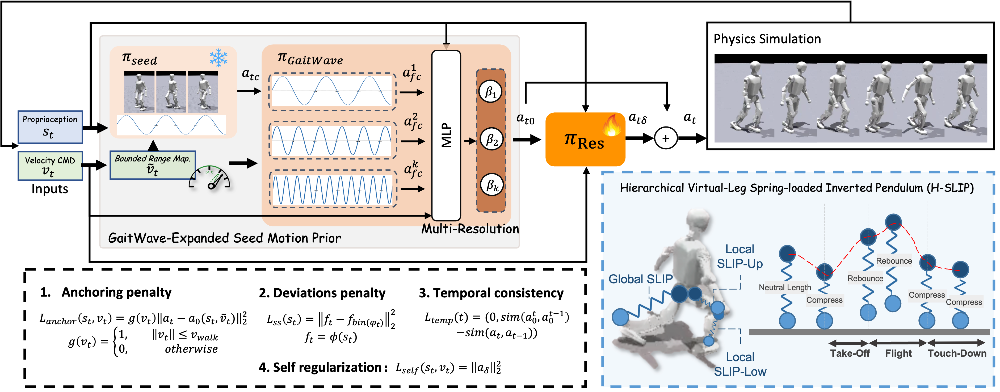
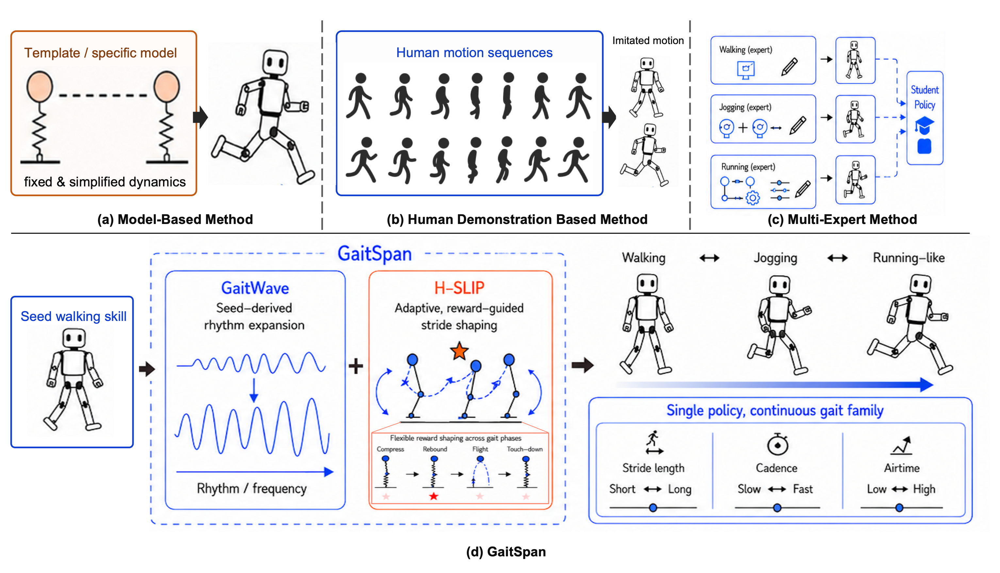

GaitSpan 🦿
Growing Humanoid Locomotion
from Walking to Running
from Walking to Running
We evaluate GaitSpan under different types of speeds, terrains, and embodiments. All gaits in real world emerge from learning fully in simulation by using a readily available walking policy as the seed for growing new skills, without relying on human demos, or multi-expert learning with gait labels.
GaitSpan is also robust under various perturbations, like heavy payloads and low-friction shoes that induce slippery contacts.
(a) Heavy payload & low-friction shoes perturbation.
(b) Acceleration from 0.5 m/s to 2.5 m/s under perturbations.
We compare the quantitative performance of GaitSpan with two baselines that uses passive control when fall happens (i.e., Freezing Mode) and pure tracking (i.e., sparse key-frame tracking), on the simulator.
1) We evaluate real-world performance of GaitSpan on different terrian environments.
2) We compare the real-world performance of GaitSpan with a baseline that uses given trajectory (i.e., Unitree G1 Controller) on outdoor environments.
Current approaches often obtain gait diversity by prescribing gait schedules, imitating motion clips, training experts to switch between or distilling skills into one policy. These strategies can produce impressive behaviors, but offer limited flexibility across continuous speed commands, terrains, and morphologies. We study skill growth with GaitSpan, a framework that expands a pretrained, basic walking policy into faster locomotion. It treats walking as a seed skill: reusable motor structure for balance, support, body coordination, and contact transition that can be regenerated at new rhythms, extended into longer/higher strides, and corrected by residual adaptation. This expansion has three aspects: 1) rhythm generation, which modulates the frozen walking policy with multiple internal clocks and learns command-conditioned combinations of the resulting canonical actions; 2) stride shaping, which rewards dynamic locomotion patterns appropriate for higher commanded speeds using a physically grounded objective inspired by spring-loaded inverted pendulum dynamics; and 3) residual adaptation, which captures motion details not accounted for by rhythm generation or stride shaping. GaitSpan is the first to deliver a single command-conditioned humanoid policy that spans walking, jogging, and running-like regimes covering a continuous speed range, transfers across morphologies, and deploys zero-shot on unseen sim-to-sim and real-world terrains.

Framework Overview. Starting from a frozen walking policy as the seed, GaitSpan expands locomotion through three components. GaitWave grows rhythm through hierarchical composition of seed-derived action waves, H-SLIP shapes dynamic stride events, and a residual branch supplies additional adaptation. Together, they yield a single command-conditioned policy spanning walking-, jogging-, and running-like regimes.
Locomotion is how a body carries itself through the world by regulating contact, balance, and momentum. In humans, walking, jogging, and running are not isolated behaviors, but related regimes of a growing motor skill. This suggests a broader view of skill acquisition: new behaviors could be reused and extended from existing motor structure, rather than be learned from scratch.
GaitSpan makes walking-to-jogging-to-running a concrete demonstration of skill growth in humanoid learning. Existing skills serve not only as endpoints, but as seed priors for growing behavior families. This could point to a higher-performing, more robust, and more scalable route for humanoid skill acquisition.

The conceptual framework differences with Current Methodologies.
@article{anonymous2026GaitSpan,
title={GaitSpan},
author={anonymous},
journal={},
year={2026}
}